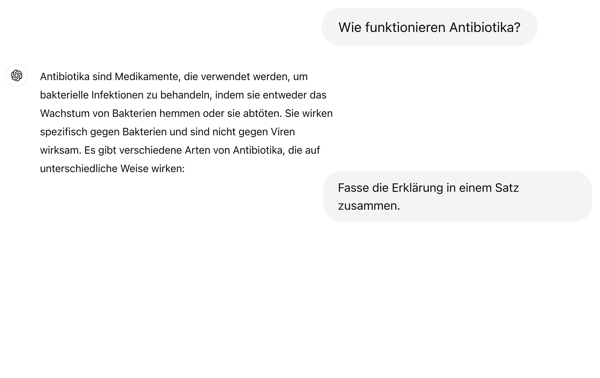
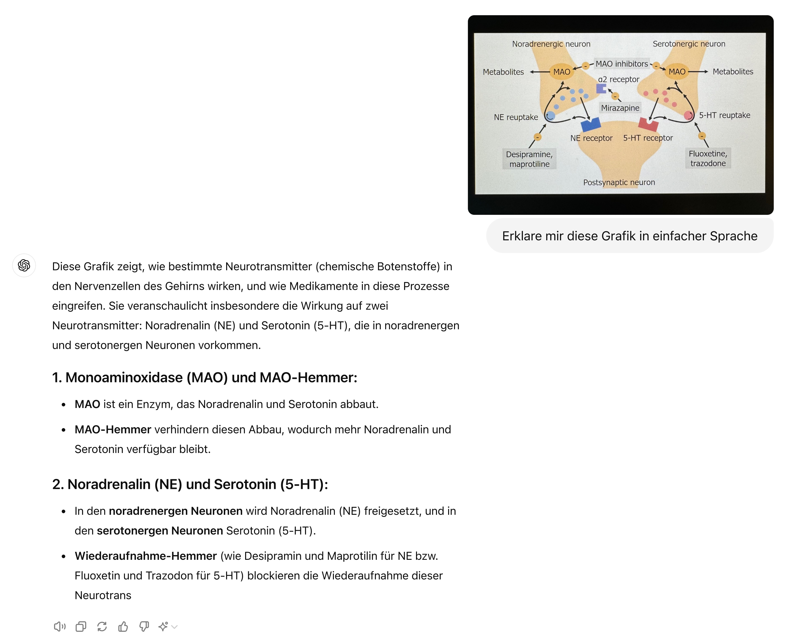
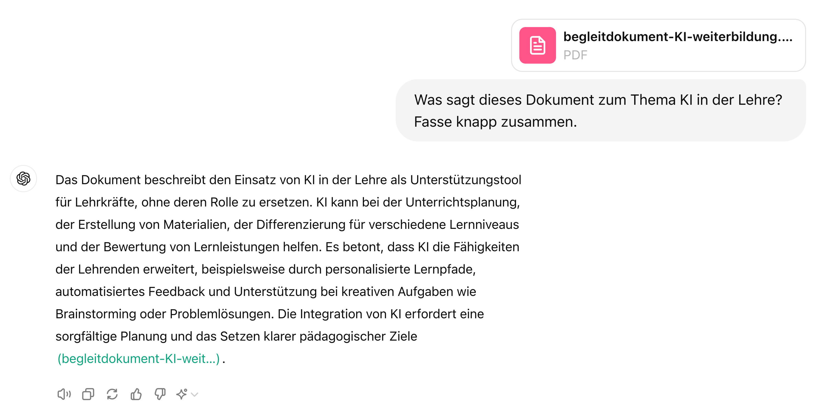
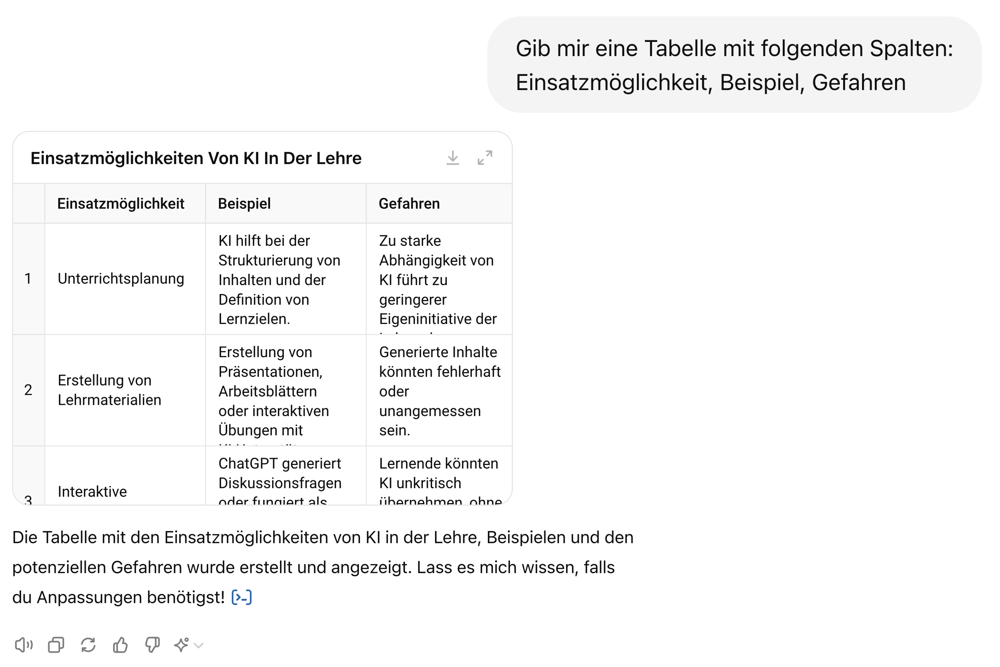
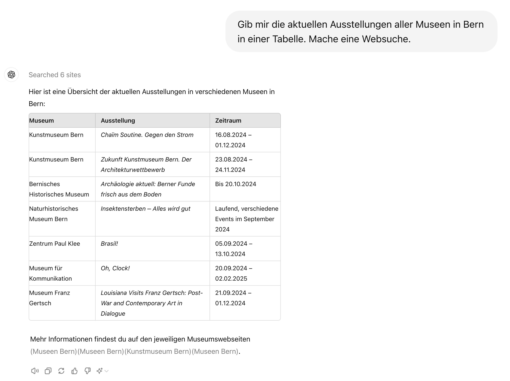
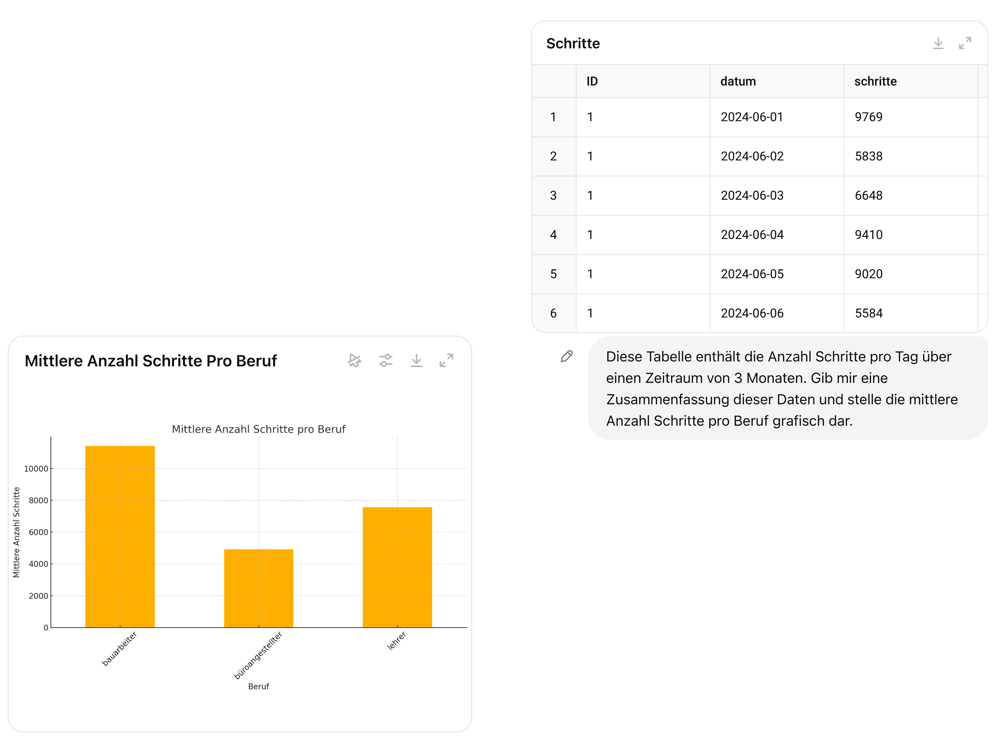
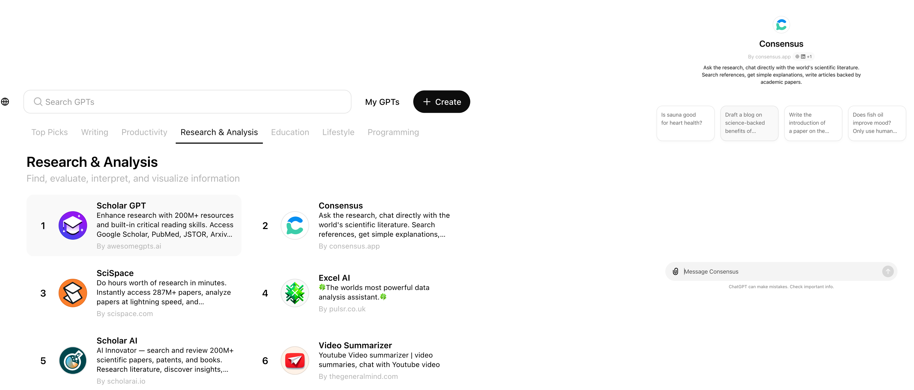
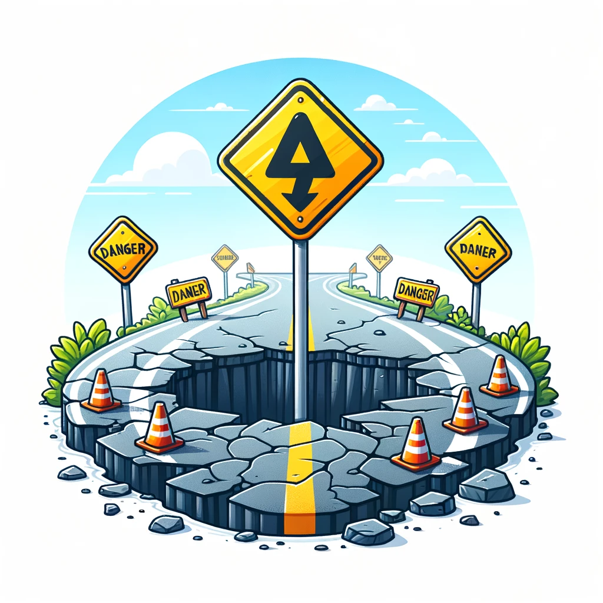
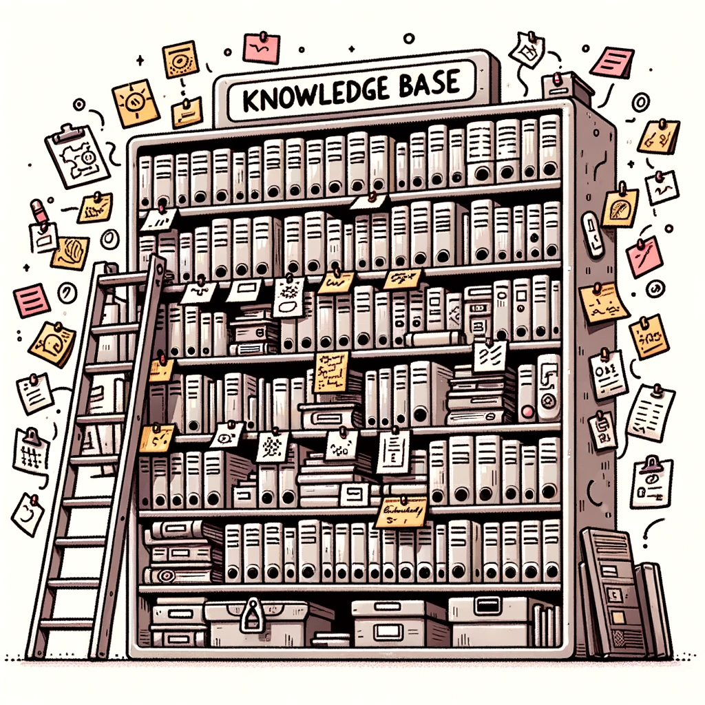

Frage 2: Wofür kann KI verwendet werden?
Möglichkeiten, Grenzen und was an der BFH gilt
Mehr als Textgenerierung
Moderne Chatbots sind keine reinen Textgeneratoren mehr.
Sie können:
- Im Internet suchen
- Dateien analysieren (PDFs, Bilder)
- Code ausführen
- Mit externen Diensten interagieren

Fragen beantworten

Bilder analysieren

Dokumente zusammenfassen

Output strukturieren

Websuche

Datenanalyse

Custom GPTs

Aber: Grenzen und Gefahren
- Urheberrecht: Trainiert mit möglicherweise geschützten Texten
- Bias: Vorurteile aus Trainingsdaten
- Energieverbrauch: Hoher Ressourcenverbrauch
- Sycophancy: Neigung, Nutzer zu bestätigen

Keine Wissensdatenbank
- LLMs werden nicht trainiert, faktisch korrekt zu sein
- Wir müssen alle Aussagen kritisch hinterfragen
- LLMs sind keine Wissensdatenbanken
- Informationen immer anhand externer Quellen überprüfen

KI an der BFH
Die BFH hat eine KI-Policy verabschiedet (Mai 2025):
Die fünf Grundsätze:
- Transparenz und Nachvollziehbarkeit
- Informationssicherheit und Datenschutz
- Ethische Reflexion und Verantwortlichkeit
- Wissenschaftliche Integrität
- Didaktische Angemessenheit und Chancengleichheit
Deine Verantwortung als Lehrperson
Laut KI-Policy sind Lehrende verantwortlich für:
- Auswahl und Einsatz von KI-Tools als Teil des Lehrkonzepts
- Prüfung der Eignung im Hinblick auf Lernziele und Kompetenzförderung
- Transparente Information der Studierenden über eingesetzte Tools
- Festlegung, wie KI-generierte Inhalte zu kennzeichnen sind
Rechtliche Aspekte
Urheberrecht
- Wer besitzt die Rechte an KI-generierten Inhalten?
- Risiko von Plagiaten
- Deklarationspflicht
Datenschutz
- Keine persönlichen Daten eingeben
- Keine sensiblen Informationen
- Kontoeinstellungen prüfen
Was darf in den Chatbot?
Unbedenklich (ÖFFENTLICH/INTERN):
- Allgemeine Fragen, Unterrichtsmaterialien, Ideenentwicklung
Nicht eingeben (VERTRAULICH):
- Namen von Studierenden, Prüfungsleistungen, Verträge, Personaldaten
Faustregel
Würdest du es an eine Pinnwand hängen? Dann ist es okay.
Freigegebene Tools
| Tool | ÖFFENTLICH | INTERN | VERTRAULICH |
|---|---|---|---|
| Microsoft Copilot (BFH) | |||
| ChatGPT Edu (BFH Pilot) | |||
| ChatGPT (persönlich)1 | |||
| Lokale KI (ohne Cloud) |
Datenschutz: Copilot
Microsoft Copilot garantiert BFH-Mitarbeitenden Datenschutz:
- Benutzerdaten sind verschlüsselt
- Microsoft verwendet Daten nicht ohne Anweisung
- Für sensible Aufgaben: Copilot bevorzugen
Zusammenfassung: Wofür kann KI verwendet werden?
Möglichkeiten:
- Vielseitige Werkzeuge (Text, Bild, Code, Suche)
- Zeitersparnis bei Routineaufgaben
- Unterstützung bei komplexen Aufgaben
Grenzen:
- Keine Faktendatenbank
- Halluzinationen möglich
- Datenschutz beachten
Takeaway
Antwort auf Frage 2
Wofür kann KI verwendet werden?
Chatbots sind vielseitige Werkzeuge mit echten Fähigkeiten. Aber sie generieren selbstbewusst auch Falsches.
Kritische Prüfung ist immer nötig.
KI in der Lehre: Beginner